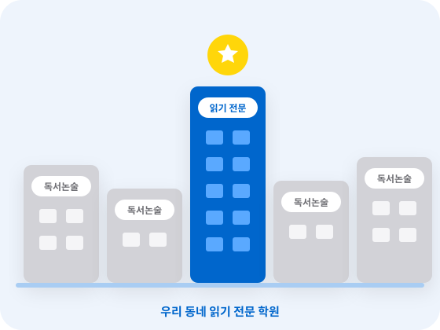
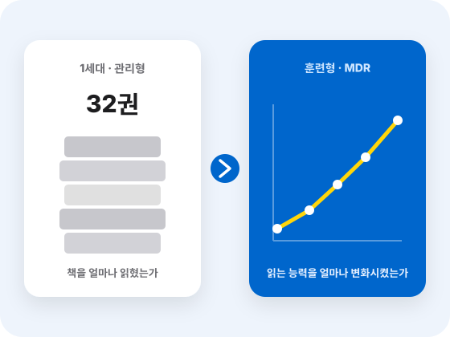
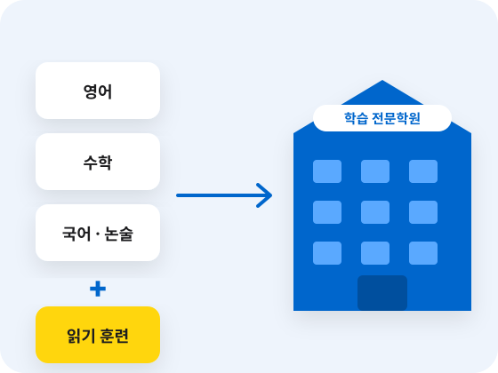

우리 동네 읽기 전문 학원
‘읽기 전문가’가 되세요.
독서 · 논술 프로그램이 아니라 학원의 새로운 경쟁력입니다.
독서논술학원은 많습니다.
그러나 ‘읽기 능력’을 전문으로 하는 곳은 많지 않습니다.
단순 독서 관리만 하는 학원을 뛰어넘어 정확히 읽고, 기억하고, 이해하는 읽기 훈련으로 아이의 독서 능력을 교과 학습 능력과 논 · 서술형 평가까지 연결하는 MDR 나비독서가 원장님 학원의 경쟁력이 됩니다.

- 01
읽기 진단
- 02
정확하게 읽기
- 03
기억하며 읽기
- 04
핵심 · 구조 파악
- 05
학습에 적용
- 06
논 · 서술형 평가
비슷한 프로그램끼리 경쟁하면
결국 가격 경쟁이 됩니다
책을 읽고 감상문을 쓰고, 토론과 글쓰기를 하는 일반적인 독서논술만으로는 우리 학원만의 차별성을 만들기 어렵습니다.
수강료 비교
교재 비교
수업시간 비교
일반 독서 · 논술과 MDR 나비독서 비교
| 일반 독서 · 논술 | MDR 나비독서 |
|---|---|
| 책을 읽게 하는 데 집중 | 읽는 방법을 훈련 |
| 독서량 · 독후활동 중심 | 정확도 · 이해 · 기억 · 구조화 중심 |
| 감상문 · 글쓰기 중심 독서 | 학습에 필요한 문해력 중심 독서 |
| 어떤 책을 몇 권 읽을 것인가 관리 | 어떤 책을 읽어도 핵심어를 찾고 의미를 연결하여 이해 · 기억하는 읽기 과정 훈련 |
| 읽었는지 확인 | 어떻게 읽는지 진단 |
| 독서 활동으로 종료 | 교과 학습 · 서술형 · 성적으로 연결 |
읽고 끝나는 독서가 아니라
정확하게 읽으면서 이해하고 기억하는 읽기 훈련 시스템입니다.
‘읽고 이해하고 기억하는 방법’을 훈련합니다.
‘독서를 성적으로 연결하는 방법’을 훈련합니다.
‘집중력과 기억력’을 훈련합니다.
관리하는 독서에서
훈련하는 독서로!
관리형 독서 학원에서 훈련형 독서 학원으로. 읽는 방법을 바꾸는 ‘읽기 훈련’ 교육으로 이제 우리 동네 읽기 전문 학원으로 성장합니다.
독서 훈련 전문가는 많지 않습니다.
훈련형 독서는 전문가만이 지도하고 성과를 만들 수 있습니다. 독서 훈련 전문가가 원장님의 「경쟁력」입니다.
독서량을 관리하는 1세대 독서는 이미 경쟁력을 잃었습니다.
관리형 독서교육이 책을 읽게 하고 독서량을 관리하는 교육이라면, MDR 나비독서는 아이가 어떻게 읽고 있는지를 진단하고 ‘읽기 능력’을 직접 훈련합니다.

앞으로의 독서교육 경쟁력은 ‘책을 얼마나 읽혔는가’가 아니라
‘아이의 읽는 능력을 얼마나 변화시켰는가’에 있습니다.
- 01
정확하게 읽기
- 02
이해 · 기억
- 03
핵심 · 구조 파악
- 04
추론 · 판단
- 05
교과 적용
이런 고도의 독서 기술은 숙련된 읽기 전문가만이 지도할 수 있습니다.
MDR 나비독서는 단순히 책을 읽고 끝나는 수업이 아니라 아이의 읽기 변화를 학습과 평가의 변화로 연결하는 ‘읽기 훈련 전문’ 교육입니다. 관리형 독서학원에서 ‘읽기 훈련 전문 학원’으로 변신하세요. 학부모가 체감할 수 있는 교육의 차이가 원장님 학원의 경쟁력입니다.
원장님 학원에 「읽기 훈련」을 더하면
영 · 수 학원이 ‘학습 전문학원’으로 확장됩니다.
기존 학원에 ‘읽기 전문성’을 더하세요. 국어 · 논술 · 영수 수업에 MDR 나비독서 읽기훈련 시스템을 더하면 초등 독서에서 중등 교과 학습까지 이어지는 새로운 교육 경쟁력이 만들어집니다.
- 학생의 읽는 힘은 높이고
- 학원의 교육 경쟁력은 더합니다

한자에서 독서로, 독서에서 교과로
읽는 힘을 공부하는 힘으로 연결합니다.
 01
01한자 · 어휘
한자의 뜻을 바탕으로 개념어 · 추상어 · 교과 어휘를 이해합니다.
 02
02독서 훈련
정확하게 읽고 핵심과 구조를 파악하고 기억하는 방법을 훈련합니다.
- 03
교과 독해
훈련한 읽기 능력을 국어 · 사회 · 과학 등 교과서 읽기에 적용합니다.
- 04
학습 성과
문제의 의미를 정확하게 이해하고 서술형 · 논술형 평가까지 연결되는 학습 능력을 키웁니다.
책만 읽는 독서교육을 넘어 어휘부터 교과 학습까지 연결하는 문해력 교육
영 · 수 중심 학원에 ‘읽기 전문성’을 더해 읽기까지 가르치는 학습 전문학원으로. 한자에서 독서로, 독서에서 교과로 어휘의 기초부터 교과 학습까지 연결하는 통합 문해력 교육으로 학원의 경쟁력을 키우세요.
단순한 독서 수업이 아닙니다.
결과로 증명하는 문해력 독서입니다
30년 교육 노하우 + 뇌과학 훈련
속독·정독·어휘 교재 개발부터 이어온 교육 노하우에 뇌과학 기반 집중·기억 훈련을 더했습니다.
ONE SYSTEM
어휘력 + 즐거운 감동독서 + 문해력 독서까지, 한 교실에서 하나의 시스템으로 운영합니다.
학부모 소통 자동화
학습관리시스템(LMS)과 알림톡으로 매 수업 결과가 학부모에게 자동 전달됩니다.
눈에 보이는 성과
올백, 전교 1등, 수능 1등급 같은 사례가 학부모의 신뢰와 입소문으로 이어집니다.
원장님 입장에서 본 나비독서의 강점
| 고민 | 나비독서의 해법 |
|---|---|
| 교육 경험이 부족해요 | 특화 교재와 단계별 지도법 매뉴얼, 신입 원장·강사 교육 제공 |
| 학년별 반 편성이 어려워요 | 무학년 시스템으로 한 교실에서 5~9명 동시 수업 |
| 학부모 상담·관리에 시간이 들어요 | 매 수업 알림톡 리포트(읽은 책 · 퀴즈 점수 · 훈련 내용 · CR지수 · 3MR지수) |
| 학생 모집이 걱정돼요 | 블로그 · 인스타그램 · 틱톡 · 유튜브 등 본사 브랜드 홍보 |
| 기존 학원과 차별화가 필요해요 | 측정 가능한 '훈련형 독서'로 관리형 독서와 확실히 구분 |
이런 분들께 추천합니다
예비 창업자
교육 경력이 없어도 매뉴얼과 교육으로 시작할 수 있습니다.
전환 창업자
기존 교습소·공부방을 문해력 전문 브랜드로 전환하고 싶은 분
영수학원 원장님
기존 학원에 독서·문해력 과목을 더해 재원생을 늘리고 싶은 분
지역 지사장
지역 거점으로 가맹점을 함께 키워갈 파트너